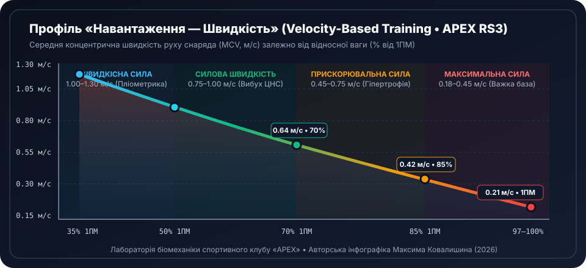
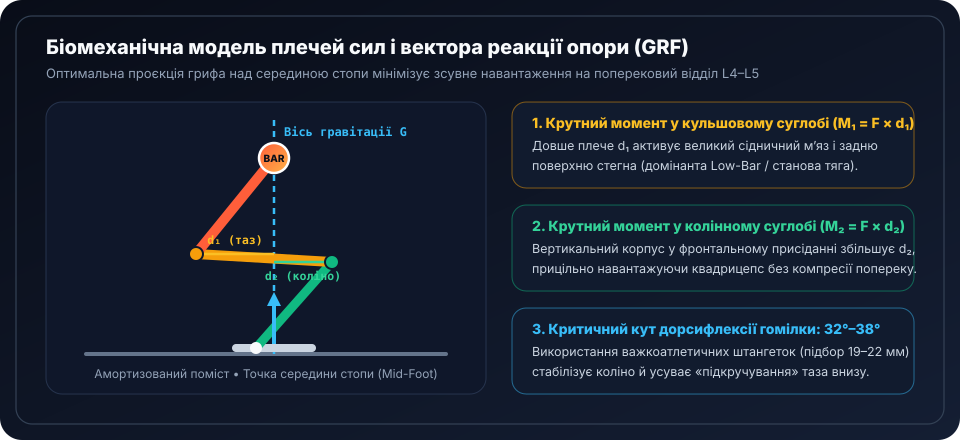
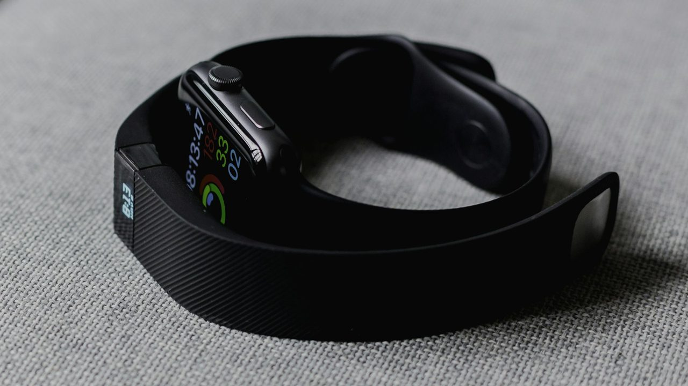

1. Чому фіксовані відсотки від 1ПМ поступаються швидкості штанги (VBT)
У класичному силовому тренінгу робоча вага задається відсотком від одноповторного максимуму (наприклад, 80% 1ПМ). Проте нейрофізіологічні дослідження доводять: реальний щоденний максимум атлета коливається в межах ±18% залежно від глибини сну, гідратації, навчального чи робочого стресу та залишкової втоми центральної нервової системи. Те, що в понеділок після вихідних відчувалося як 80%, у п’ятницю може фактично становити 92% поточного ресурсу.
Саме цю проблему вирішує Velocity-Based Training (VBT) — технологія керування навантаженням за середньою концентричною швидкістю руху грифа (Mean Concentric Velocity, м/с), яку в залі спортивного клубу APEX зчитують оптичні та лінійні енкодери на силових рамах.

Атлет планує присідання 5 × 4 зі штангою 130 кг (цільова швидкість для 85% 1ПМ у присіданні становить 0,43–0,46 м/с). Після безсонної ночі перший робочий повтор на 130 кг демонструє лише 0,33 м/с — це відповідає реальним 93% сьогоднішнього максимуму! Замість «ламати» техніку, атлет знижує вагу на −7% (до 120 кг), повертає швидкість у коридор 0,45 м/с і отримує ідеальний силовий стимул без виснаження ЦНС.
| Назва швидкісної зони | Швидкість (м/с) | Відсоток 1ПМ | Ліміт втрати VL | Біомеханічний ефект |
|---|---|---|---|---|
| 1. Стартова швидкість | > 1,30 м/с | 20–35% 1ПМ | до 10% | Балістичні вистрибування, кидки медбола, еластичність сухожиль |
| 2. Швидкісна сила | 1,00–1,30 м/с | 35–55% 1ПМ | 10–15% | Максимальна швидкість наростання сили (RFD) у спринті й боксі |
| 3. Силова швидкість | 0,75–1,00 м/с | 55–72% 1ПМ | 15% | Динамічні жими й тяги, підрив в олімпійській важкій атлетиці |
| 4. Прискорювальна сила | 0,45–0,75 м/с | 72–85% 1ПМ | 20–25% | Функціональна гіпертрофія швидких м’язових волокон IIa |
| 5. Абсолютна сила | 0,18–0,45 м/с | 86–100% 1ПМ | 10–15% | Внутрішньом’язова координація та змагальний максимум 1ПМ |
2. Біомеханіка суглобових важелів, крутного моменту та вектора опори
У будь-якій вправі з вільним обтяженням м’язи долають не просто масу штанги, а крутний момент сили: \( M = F \times d \), де \( F \) — вага системи «атлет + снаряд», а \( d \) — перпендикулярна відстань (плече важеля) від осі обертання суглоба до вертикальної лінії гравітації грифа.

Якщо перший повтор жиму лежачи з вагою 85 кг виконується зі швидкістю 0,60 м/с, то 20% втрати швидкості настає на позначці 0,48 м/с (зазвичай 6-й або 7-й повтор). Зупинка підходу в цій точці забезпечує такий самий ріст поперечника грудних м’язів, як робота «до відмови» на 10-му повторі (0,19 м/с), але скорочує час відновлення нервової системи з 60 до 28 годин!

3. Інтерактивний конструктор олімпійської штанги IWF / IPF (NEW RS3)
Щоб не витрачати концентрацію між важкими підходами на усний підрахунок дисків, скористайтеся живим візуальним конструктором штанги клубу APEX. Модуль автоматично розкладає будь-яку цільову вагу на кольорові калібровані бамперні диски стандарту IWF (червоний 25 кг, синій 20 кг, жовтий 15 кг, зелений 10 кг, білий 5 кг та фракційні 2,5 / 1,25 кг).
Візуальний симулятор комплектації штанги
Фактична зібрана маса: 142.5 кг
4. Діагностична лабораторія готовності ЦНС та швидкості VBT
Поєднання ранкової телеметрії смартгодинника (варіабельність серцевого ритму HRV rMSSD + тривалість сну) із фактичною швидкістю штанги дозволяє обчислити персональний Індекс готовності APEX Readiness Score (0–100) перед початком основної частини тренування.

Інтерактивний аналізатор «Готовність ЦНС + Авторегуляція VBT»
5. Кінематичний паспорт ключових багатосуглобових рухів
У підсумковій таблиці систематизовано біомеханічні орієнтири п’яти фундаментальних вправ силової арени APEX — від критичних кутів у суглобах до миттєвих технічних підказок тренера.
| Базовий рух | Домінантні м’язи | Швидкість 1ПМ | Критичний вектор техніки |
|---|---|---|---|
| Присідання зі штангою | Квадрицепс, сідничні, розгиначі спини | 0,30 м/с | Коліна рухаються строго в площині другого пальця стопи; жорсткий внутрішньочеревний тиск 360° |
| Класична станова тяга | Біцепс стегна, сідничні, трапеції | 0,17 м/с | Попередній натяг грифа («вибір люфту» лопатками вниз) до моменту відриву дисків від помосту |
| Жим штанги лежачи | Великі грудні, передні дельти, трицепс | 0,18 м/с | Ретракція та депресія лопаток, J-подібна траєкторія від низу грудини до лінії плечових суглобів |
| Олімпійський поштовх (Clean) | Вибуховий потрійний розгин усього тіла | 0,88 м/с | Вертикальний підрив на повній стопі без раннього згинання рук у ліктях; швидкий прийом на передні дельти |
| Підтягування з обтяженням | Найширші спини, круглі м’язи, плечопроменеві | 0,24 м/с | Старт із активної депресії лопаток при утриманні преса й сідниць у легкій «порожнистій» позиції (Hollow) |
Продовжуйте дослідження наукової бази APEX RS3
Поєднайте цифрову біомеханіку штанги з розрахунком пульсових зон Карвонена та циркадною архітектурою відновлення в інших розділах нашого клубу: